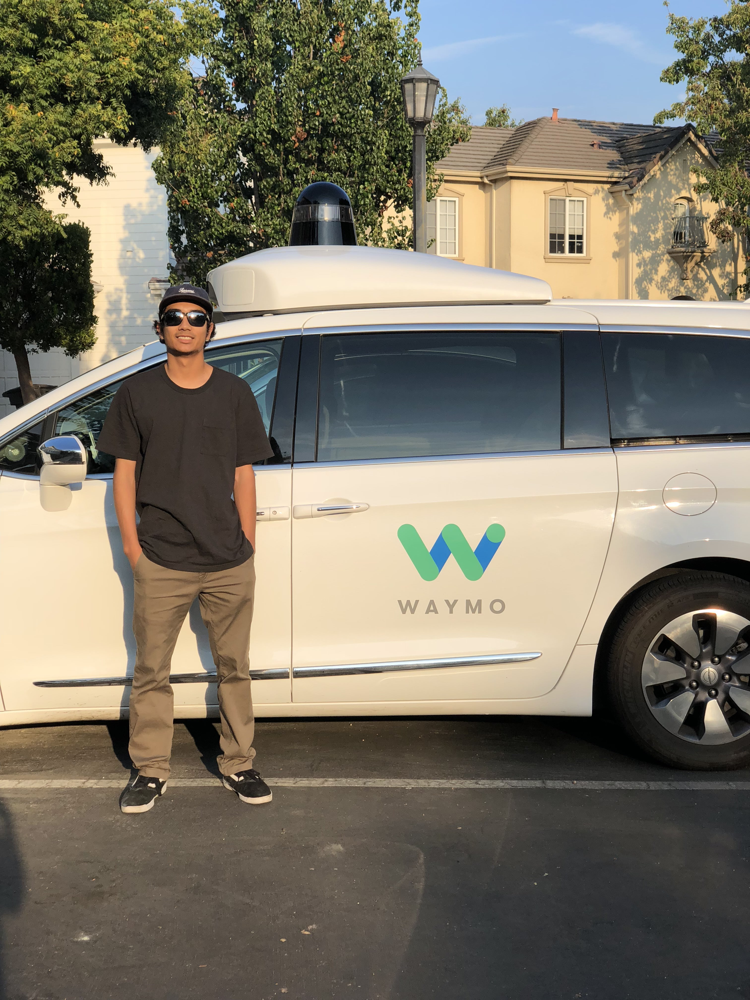

About
|  |
I am a senior at the University of Nevada, Reno studying Computer Science & Engineering with a minor in Mathematics. I am an aspiring software engineer with interests in automation, machine learning, and operating systems. In my free time, my hobbies are golf, snowboarding, and taekwondo (2nd degree black belt). |
Experience

|
Roku Inc. |
• Used Python to develop automated tests that assess the Roku OS
• Debugged code in the automation framework
• Managed and ran automated regression test suites
• Developed test cases to rigorously test new features in upcoming software updates
• Improved accuracy and speed of current automated tests
• Executed stress and performance tests

|
Waymo |
• Tested and collected data for self-driving vehicles
• Monitored and troubleshot automated self-driving software systems
• Mapped un-cruised locations and tested new software builds
• Provided concise, clear, and accurate verbal and written feedback to engineers regarding self-driving vehicle performance
• Completed daily reports and documented procedures and tests
• Educated and interacted with members of the public regarding self-driving technology
Projects

|
UNR Building Classifier |
• Developed web application for image classification of UNR buildings using transfer learning
• Built and deployed image classifier using Python and the FastAI machine learning framework
|
|
Service Learning Project |
• Promoted STEM (Science, Technology, Engineering, Mathematics) education by developing and administering an engineering project to a primary school classroom